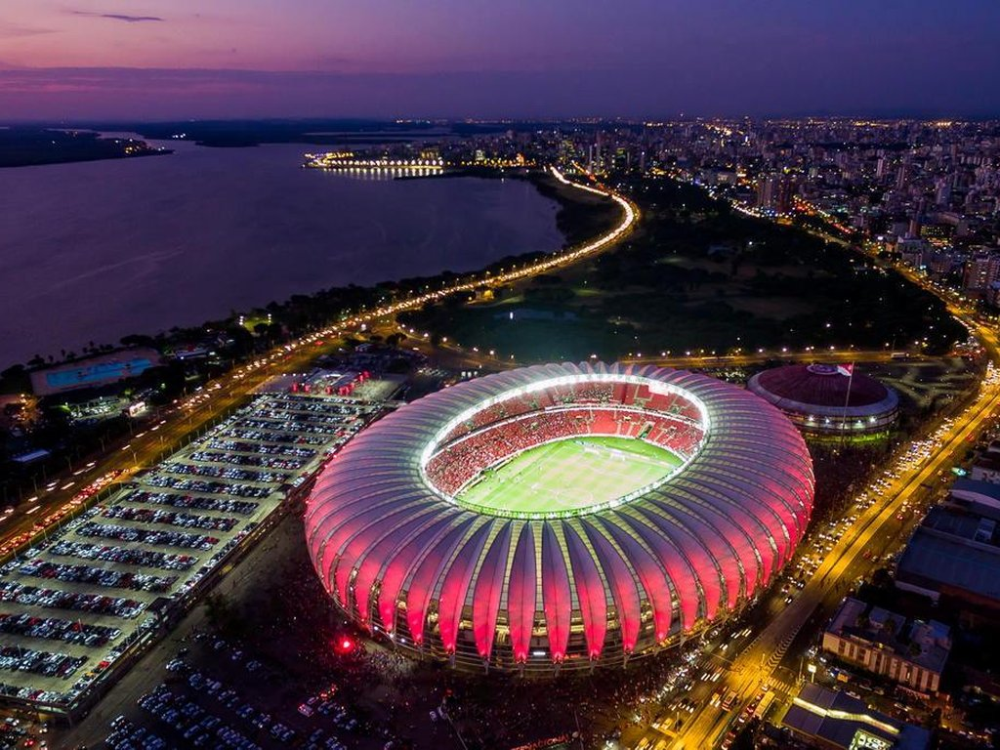
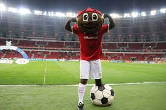

aqui falaremos sobre o internacional, o maior time do sul
O Sport Club Internacional, mais conhecido como Internacional, e popularmente pelos apelidos de Colorado e Inter de Porto Alegre, é um clube multiesportivo brasileiro com sede na cidade de Porto Alegre, capital do Rio Grande do Sul. Foi fundado em 4 de abril de 1909, pelos irmãos Poppe, com o objetivo de ser uma instituição democrática e sem preconceitos. Tem como suas cores o vermelho e o branco e seus torcedores são conhecidos como Colorados. No futebol, é um dos clubes mais vitoriosos do Brasil e das Américas, sendo o terceiro maior campeão internacional do país, ao lado de Flamengo e Cruzeiro, com sete conquistas oficiais, superado somente por Santos e São Paulo. Suas maiores conquistas foram as do Mundial de Clubes da FIFA, em 2006, e os dois títulos da Copa Libertadores da América, em 2006 e 2010, além de uma Copa Sul-Americana de forma invicta, em 2008,dois títulos da Recopa Sul-Americana, em 2007 e 2011, e uma Levain Cup/CONMEBOL (Copa Suruga Bank), em 2009.
.jpg)
O clube foi fundado em 4 de abril de 1909, pelo jornalista brasileiro Henrique Poppe Leão, junto com seus irmãos Luiz Madeira Poppe e José Eduardo Poppe, que se transferiram de São Paulo para Porto Alegre, em 1901, e encontraram dificuldades para a prática do futebol, uma vez que os principais clubes da cidade, à época, eram restritos a descendentes de alemães.[não consta na fonte citada] O nome é uma referência à abertura a todas nacionalidades e uma homenagem ao Internacional paulista, do qual os irmãos Poppe fizeram parte. No dia 18 de julho do mesmo ano, o Internacional realizou sua primeira partida, no estádio do Grêmio (Baixada), situado no Bairro Moinhos de Vento. O resultado não poderia ser pior para o Colorado: perdeu por 10–0 para o Grêmio. No dia 7 de setembro de 1909, com cinco meses de fundação, o Internacional obteve seu primeiro empate contra uma equipe considerada de primeira linha na época: 0–0 contra o Militar Football Club, que no ano seguinte seria o campeão citadino. Mas a primeira vitória viria ainda neste ano, no dia 12 de outubro contra o mesmo Militar, por 2–1.
Mauricio Magalhães Prado(meio-campista)
João Lucas de Souza Cardoso(meio-campista)
Gabriel Girotto Franco(meio-campista)
Alan Patrick Lourenço(meio-campista)
Gabriel Iván Mercado(zagueiro)
Sergio Ramón Rochet Álvarez(goleiro)
Lucca Holanda Sampaio Tavares(atacante)
Enner Remberto Valencia Lastra(atacante)
esses são só alguns jogadores de tanto craques que temos.
Os títulos pela categoria profissional: 1912 – Taça 12 de Abril 1913 – Campeão Metropolitano de Porto Alegre (também foi campeão em 1914, 1915, 1916, 1917, 1920, 1922, 1927, 1934, 1936, 1940, 1941, 1942, 1943, 1944, 1945, 1947, 1948, 1950, 1951, 1952, 1953, 1955 e 1972). 1927 – Campeão Gaúcho 1934 – Campeão Gaúcho 1940 – Campeão Gaúcho 1941 – Bicampeão Gaúcho 1942 – Tricampeão Gaúcho 1943 – Tetracampeão Gaúcho 1944 – Pentacampeão Gaúcho 1945 – Hexacampeão Gaúcho 1947 – Campeão Gaúcho 1948 – Bicampeão Gaúcho 1950 – Campeão Gaúcho 1951 – Bicampeão Gaúcho 1952 – Tricampeão Gaúcho 1953 – Tetracampeão Gaúcho 1953 – Campeão do Torneio Quadrangular Régis Pacheco (Bahia) 1954 – Campeão do Torneio de Inauguração do Estádio Olímpico (Taça Relógios Eska) 1955 – Campeão Gaúcho 1956 – Campeão Panamericano representando a Seleção Brasileira 1961 – Campeão Gaúcho 1969 – Campeão Gaúcho 1970 – Bicampeão Gaúcho 1971 – Tricampeão Gaúcho 1972 – Tetracampeão Gaúcho 1973 – Pentacampeão Gaúcho 1974 – Hexacampeão Gaúcho 1975 – Heptacampeão Gaúcho 1975 – Campeão da Copa Constantino 1975 – Campeão Brasileiro 1976 – Octacampeão Gaúcho 1976 – Bicampeão Brasileiro 1978 – Campeão da Copa Governador do Estado 1978 – Campeão Gaúcho 1978 – Copa da Governador do Estado 1978 – Campeão do Torneio Viña del Mar 1979 – Tricampeão Brasileiro de forma invicta 1981 – Campeão Gaúcho 1982 – Bicampeão Gaúcho 1982 – Campeão da Copa Joan Gamper, em Barcelona, na Espanha 1983 – Tricampeão Gaúcho 1983 – Campeão do Torneio Costa Del Sol, em Málaga, na Espanha 1983 – Campeão do Torneio Costa Noroeste do Pacífico, no Canadá 1983 – Campeão Gaúcho de Futebol Feminino 1984 – Tetracampeão Gaúcho 1984 – Vice-Campeão Olímpico representando a Seleção Brasileira 1984 – Campeão da Copa Kirin, em Tóquio, no Japão 1984 – Campeão do Torneio Heleno Nunes 1987 – Campeão do 1º Torneio Internacional de Glasgow, na Escócia 1987 – Campeão da Taça Governador do Estado (Quadrangular de C. Grande) 1987 – Torneio da Cidade de Vigo, na Espanha 1989 – Campeão do Torneio de Ceuta, na Espanha 1991 – Campeão da Copa Marlboro, no Paraguai 1991 – Campeão Gaúcho 1991 – Campeão da Copa Governador do Estado 1992 – Campeão da Copa Wako Denki, no Japão 1992 – Bicampeão Gaúcho 1992 – Campeão da Copa do Brasil 1994 – Campeão da Copa Sumitomo Bank, no Japão 1994 – Campeão do Torneio 25 Anos do Beira-Rio 1994 – Campeão Gaúcho 1996 – Campeão do Torneio Mercosul 1997 – Campeão Gaúcho 1997 – Campeão Gaúcho de Futebol Feminino 1998 – Campeão Gaúcho de Futebol Feminino 1999 – Campeão Gaúcho de Futebol Feminino 2000 – Copa Sul Feminina 2001 – Bicampeão do Torneio Viña Del Mar, no Chile 2001 – Copa Sul Feminina 2002 – Super Campeão Gaúcho 2002 – Campeão Gaúcho de Futebol Feminino 2003 – Bicampeão Gaúcho 2003 – Campeão Gaúcho de Futebol Feminino 2004 – Tricampeão Gaúcho 2005 – Tetracampeão Gaúcho 2006 – Campeão da Libertadores da América 2006 – Campeão da Copa do Mundo de Clubes Fifa, no Japão 2007 – Campeão da Recopa Sul-Americana 2008 – Campeão da Dubai Cup 2008 – Campeão Gaúcho 2008 – Campeão invicto da Copa Sul-Americana 2009 – Bicampeão Gaúcho 2009 – Campeão da Copa Suruga Bank, no Japão 2010 – Campeão do Torneio Fronteira da Paz 2010 – Bicampeão da Libertadores da América 2011 – Campeão Gaúcho 2011 – Bicampeão da Recopa Sul-Americana 2012 – Bicampeão Gaúcho 2013 – Tricampeão Gaúcho 2014 – Tetracampeão Gaúcho 2015 – Pentacampeão Gaúcho 2016 – Campeão da Recopa Gaúcha 2016 – Hexacampeão Gaúcho 2017 – Bicampeão da Recopa Gaúcha 2017 – Campeão Gaúcho de Futebol Feminino 2019 – Campeão Gaúcho de Futebol Feminino 2020 – Campeão Gaúcho de Futebol Feminino 2021 – Campeão Gaúcho de Futebol Feminino
É possível afirmar, no entanto, que o pontapé inicial na história da construção do Gigante foi dado em 12 de setembro de 1956. Nesta data, o vereador Ephraim Pinheiro Cabral, que até então já havia presidido o Inter entre 1951 e 1952, apresentou na Câmara de Porto Alegre projeto para a doação de uma área de oito hectares ao Clube do Povo, visando à edificação de um novo estádio para o Colorado. Existia, contudo, um porém: o terreno ficava dentro do Rio Guaíba. Portanto, caso a proposição fosse aprovada, seria necessário aterrar a região antes de dar início às obras.
o Saci Em 2016, o Saci se tornou oficialmente o mascote do Internacional – pela primeira vez documentado no estatuto do clube, depois de mais de décadas nas graças dos torcedores.
o maior idolo do internacional é o fernandão que fez história no ano de 2006.
Nascido em 18 de março de 1978, Fernando Lúcio da Costa estava predestinado a trilhar um caminho sem precedentes na história do Internacional. Nosso Eterno Capitão não se perpetuou por levantar o troféu no Japão, ou por bater Ceni quando este deixou a bola escapar de sua mão. Pelo contrário, se viveu todos estes momentos foi porque encarou cada segundo com o manto vermelho com a seriedade que só os grandes têm. Sempre se doou ao máximo, e quando nele chegava, percebia que podia dar mais um pouquinho. Era um gigante, como o Beira-Rio.
Ao longo de quatro anos, Fernandão construiu trajetória de 77 gols em 190 jogos, recheada de títulos e marcada por enorme protagnismo. Logo em sua estreia, o goiano marcou o Gol Mil dos Gre-Nais, o segundo de clássico vencido pelo Inter por 2 a 0. Em breve veio a primeira taça, do Gauchão, Campeonato que voltaria a conquistar em 2008, ano marcado, também, por Copa Dubai. Na temporada anterior, participou da conquista da Recopa, enquanto, em 2006, chegou ao auge vestindo vermelho ao capitanear as inesquecíveis esquadras vencedoras de Libertadores e Mundial.
Um verdadeiro colorado, sempre disposto a sujar sua camisa de barro e sangue para tornar o vermelho mais vibrante, forte, ainda atuou como dirigente colorado, em 2011, e técnico, na temporada seguinte. No dia 7 de junho de 2014, o Eterno Capitão colorado faleceu, deixando órfãos milhões que acompanharam cada passo de sua história no Clube do Povo. Desde então, seguimos, daqui, venerando sua rica biografia, com a certeza de que, onde estiver, Fernandão estará torcendo por nós.
temos outro exemplo de idolos colorados
vamos falar agora do D'Alessandro, um idolo recente que atualmente foi jogar para o Cruzeiro No futebol, poucas rivalidades são maiores do que a existente entre Brasil e Argentina. Na biografia colorada, poucos nomes são maiores do que o de Andrés Nicolás D’Alessandro, o segundo jogador que mais vezes defendeu o Inter na história. Multicampeão, o hermano virou um de nós. Literalmente. Cidadão brasileiro e torcedor colorado, El Cabezón marcou época na meia-cancha do Clube do Povo. Quando desembarcou em Porto Alegre, na noite de 30 de julho de 2008, D’Alessandro carregava grande responsabilidade. Contratado pouco mais de um mês após as saídas de Fernandão e Iarley, o argentino chegava para manter o Inter entre os protagonistas do futebol sul-americano. Poucos meses depois, Andrés já teria correspondido à euforia da torcida que o recebera no aeroporto. Ficha técnica: 1998 – River Plate-ARG 2003 – Wolfsburg-ALE 2006 – Portsmouth-ING 2006 – Zaragoza-ESP 2008 – San Lorenzo-ARG 2008 – Internacional 2016 – River Plate-ARG 2017 – Internacional 2021 – Nacional-URU 2022 – Internacional Títulos: Campeonato Argentino – Apertura (1999) Campeonato Argentino – Clausura (2000, 2002 e 2003) Seleção das Américas – Jornal El País (2001, 2002, 2008 e 2010) Medalha de Ouro nos Jogos Olímpicos (2004) Copa Sul-Americana (2008) Copa Suruga Bank (2009) Campeonato Gaúcho (2009, 2011, 2012, 2013, 2014, 2015 e 2016) Copa Libertadores da América (2010) Recopa Sul-Americana (2011 e 2016) Melhor jogador das Américas – Jornal El País (2010) Bola de Bronze do Mundial de Clubes (2010) Prêmio EFE – Melhor estrangeiro do Brasileirão (2013) Recopa Gaúcha (2016 e 2017) Copa Argentina (2016) Super Copa Uruguai (2021)